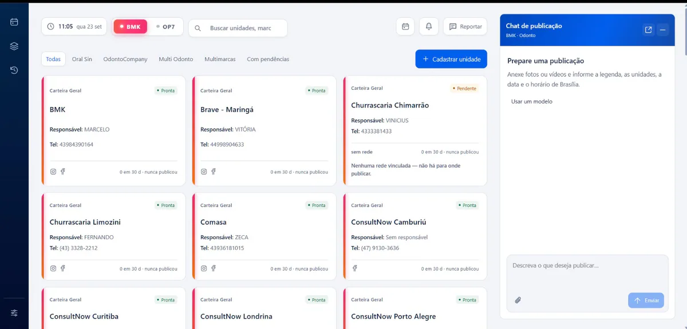
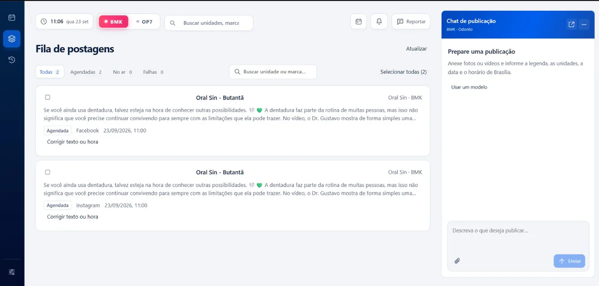

Human confirmation
The agent interprets dates, times, networks and locations, but never posts on its own. The final list of destinations stays visible before confirmation.
Digital product
One post. The right destination for every location.
 Enlarge
Enlarge The starting point
AUTOPOST was built for an operation with dozens of brands and more than 80 client locations. The same campaign had to reach the right Instagram and Facebook accounts without depending on an error-prone manual routine.
The team writes the request in Portuguese, attaches the media, checks the destinations and confirms. The platform interprets the schedule, applies each location’s technical sign-off and follows the post all the way to publication.
The agent interprets dates, times, networks and locations, but never posts on its own. The final list of destinations stays visible before confirmation.
Row Level Security in PostgreSQL separates each operator’s data inside the database itself. Publishing destinations are tied to the location’s record, and isolation does not rely on front-end validation alone.
The queue checks the network before resending, monitors failures and expired connections, and offers a retry without duplicating the post in the feed.

Enlarge
EnlargeDevelopment
The interface uses React, TypeScript, Vite and plain CSS, with a weight budget enforced at build time. An AI agent chat, a drag-and-drop calendar and the publishing queue are part of the same workflow.
The Meta Graph API publishes Reels, images and carousels to Instagram and Facebook. Each network gets its own caption, with the WhatsApp link where it is clickable. For clinics, the technical lead and professional registration come from the location’s record. Warnings about pricing, promises of results and before-and-after images support the human review of health content.
The back end uses Node.js, Express, TypeScript and PostgreSQL with Row Level Security. Meta credentials are encrypted with AES-256-GCM and never return to the screen. The queue tracks failures, delays and connections about to expire, allows retries and bulk deletion of posts. Scheduling uses Brasília time, regardless of the server’s time zone.
The infrastructure runs on Oracle Cloud with Ubuntu, Caddy with HTTPS, systemd and daily backups. Around 800 Vitest tests cover units, integrations and isolation between clients against a real database.
My role spanned the whole product: concept, interface and experience design, full-stack development, database, integrations and production deployment.